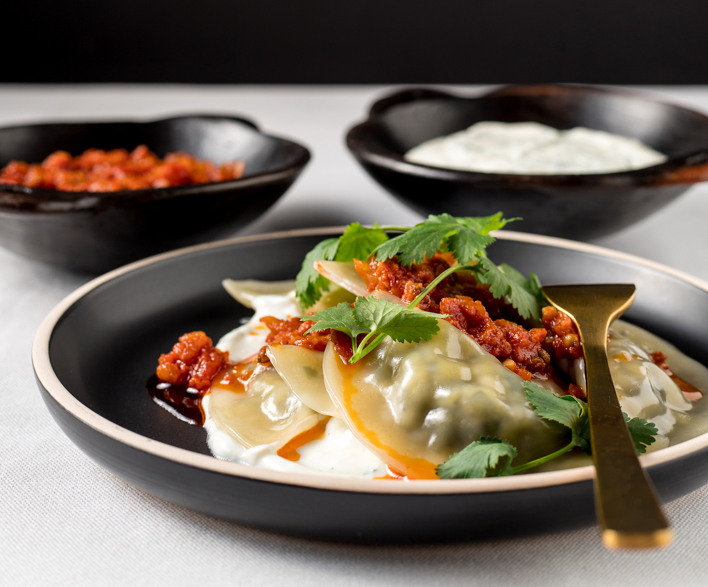

Ashak
Ingredients
- 20-25 wonton wrappers may also use fresh dough
- Dumpling Filling
- 3 leeks (may add or substitute with scallions)
- 2 1/2 Tbsp extra virgin olive oil
- Yogurt
Instructions
Vegetarian Ashak is a classic Afghan dish made with dumplings filled with leeks and topped with a tomato-lentil sauce.The filling is made by chopping leeks and dill, then sautéing in olive oil with salt and pepper. The tomato-lentil sauce is made by sautéing eggplants, onions, tomatoes, and spices in olive oil, with optional channa daal lentils. The garlic yogurt sauce is made by mixing yogurt, garlic, and dried mint. The dumplings can be made from fresh dough or wonton wrappers and are assembled by adding the filling and sealing, then boiling or steaming. To serve, place a layer of yogurt sauce, then the dumplings, tomato-lentil sauce, and a final layer of yogurt sauce topped with olive oil and paprika.